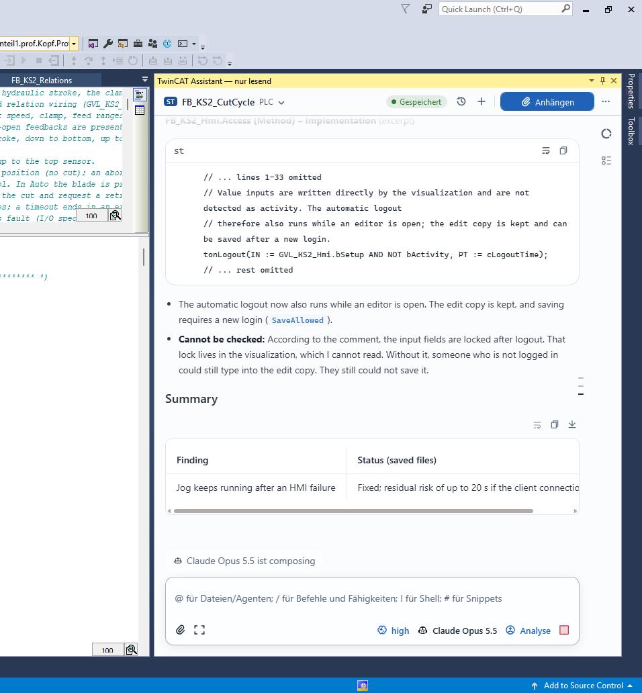

Explain Structured Text
Discuss declarations, function blocks and implementations using an attached POU snapshot. The Assistant can explain sequences and relationships as text.
“Explain the states and transitions in this function block.”
Explain Structured Text, explore your PLC project and find relevant Beckhoff documentation. In a docked chat window, with your project’s context.
0.2.0 Beta 4 · Windows x64 · Read-only analysis
FUNCTION_BLOCK FB_StartDelay VAR_INPUT bEnable : BOOL; END_VAR VAR fbDelay : TON; bReady : BOOL; END_VAR fbDelay( IN := bEnable, PT := T#3S ); bReady := fbDelay.Q;
When is bReady set?
When bEnable stays TRUE for three seconds, the TON sets its output Q. This also makes bReady TRUE.
// TON → Q
bReady := fbDelay.Q;A FALSE input resets the timer.
Source: example snapshotAsk about your function block …
Ask concrete questions about your project. The Assistant combines context you attach with the available local read tools.
Discuss declarations, function blocks and implementations using an attached POU snapshot. The Assistant can explain sequences and relationships as text.
Search the bound PLC project, read POUs and separate methods or actions, and explore library references through the Engineering MCP.
Search locally prepared InfoSys content and open matching articles with their sources through the Knowledge MCP. A prepared documentation corpus is required.
Switch between project chats and a general chat. Model selection, streamed responses, tool activity, code blocks and attachments are part of the chat interface.
The real screenshot shows the Assistant docked beside the Structured Text editor.
Code excerpts, answers and summaries appear in the chat. Attachments, model selection and analysis mode are available in the same window.
The capture retains the original interface with German and English text.

Saved files and attached snapshots are different sources. The beta does not claim complete live access to unsaved editor content.
Engineering tools read the saved state of the bound PLC project. Methods, actions and properties can be separate objects.
A snapshot is a separate context capture. It may differ from the saved state and is not automatically the verified current editor buffer.
Knowledge searches your activated InfoSys corpus. The software bundles neither Beckhoff articles nor a ready-to-use documentation corpus.
MCP services and model execution run outside the IDE process. Model requests go to the provider you configure.
The installer sets up the Windows application. Configure provider access and locally installed InfoSys help separately as needed.
Close TcXaeShell, compare the SHA-256 checksum and run Setup. Confirm UAC with the Windows account that uses the Assistant.
Open the Assistant tool window, connect your model provider and select a model. A normal EXE installation needs neither Git nor npm.
Open a PLC project and select a Structured Text POU. Attach a snapshot when you want to discuss that specific code.
Select your installed InfoSys help in Knowledge search and start setup. Import and the initial verification can take several minutes.
Windows x64 · Supported IDE host: TcXaeShell 15 x86
Installation, context boundaries and technical details are in the repository. Most linked references are in English.
Installation steps, supported target and remaining limitations.
02Project chats, consent and context snapshots.
03Select, import and activate locally installed InfoSys help.
04Saved files, snapshots and integration boundaries.
05The native host, chat, core and local MCP services.
06Current implementation status and outstanding acceptance work.
The current beta analyses and explains. It offers no tools for PLC code edits, compilation, deployment, online changes or runtime control. Proposals remain text for you to review and apply yourself.
An attached snapshot can differ from the saved state. The beta does not guarantee complete or verified access to the current editor buffer. Without a relevant attachment or tool result, it does not claim live editor access.
Engineering and Knowledge use local sources. Model requests, however, go to the provider you configure. Attached code and retrieved tool results can become part of the model context. Your provider’s terms apply separately.
No. Use your locally installed InfoSys help and prepare a local search corpus from it. The Assistant bundles no Beckhoff articles or ready-to-use knowledge corpus.
Beta 4 contains technical groundwork, but acceptance on a real 4026 host remains outstanding. The installer target is still blocked. Use the stated prerequisites for TwinCAT 4024 and TcXaeShell 15 x86.